PATROAM
◈
✎
▣
⟳
–
▢
✕
⬡ INSPECTOR
✕
KNOWLEDGE GRAPH
RAG
⟳
⊹
❄
◎
⬡
☰
▦
⊞
⤢
drag a node to move it (children follow) · drag drops it in place · right-click for options · scroll to zoom · Esc to exit
Loading…
Loading…
Search
⟳ Re-index documents
Conversation
✕
drag to rotate · scroll to zoom · click to pulse
Deafen
♪
+
→
■